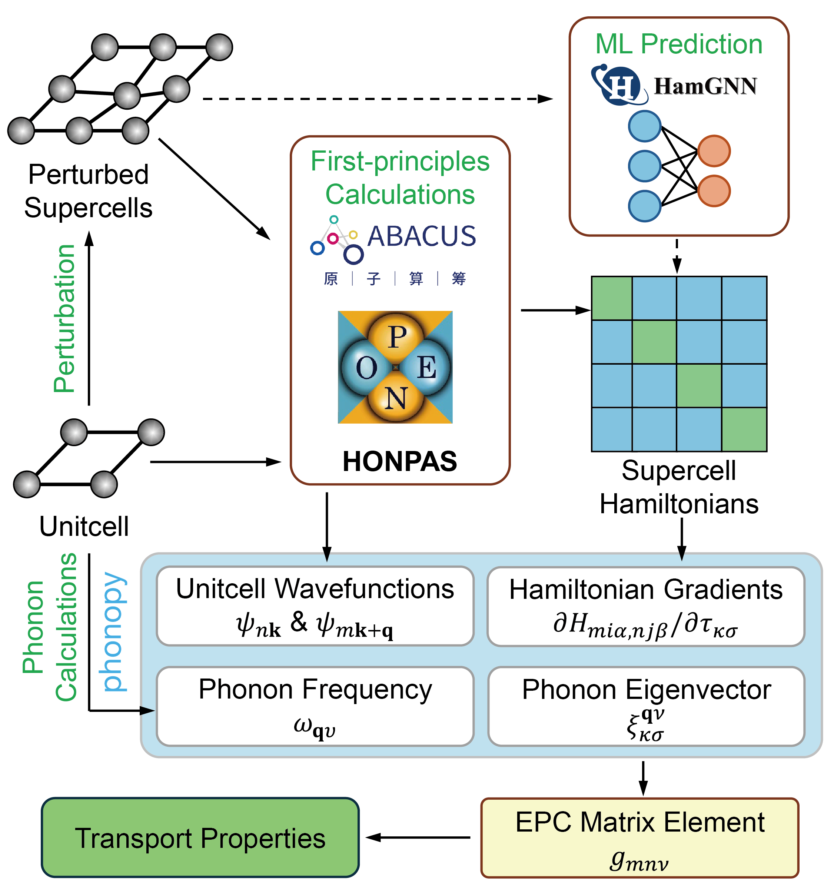

Workflow
QTrans connects electronic-structure and phonon data to electron-phonon
coupling (EPC) and transport properties through two stages: preparation
(QTrans_prep) and calculation (QTrans_run). Preparation produces
reusable real-space datasets; calculation evaluates the selected property
using these datasets and the requested sampling meshes.


Figure 1. Overview of the QTrans workflow. Electronic Hamiltonians are obtained from first-principles calculations or machine learning predictions. Together with phonon data and real-space gradients, they provide the ingredients for EPC and transport calculations.
Preparation
1. Prepare the reference cell and electronic data
Choose a unit cell and obtain its Hamiltonian and overlap matrices using a
supported electronic-structure interface. Run QTrans_prep with
prep_mode: graph-pack to convert the outputs into
graph_data_QTrans.npz. This unit-cell dataset supplies the electronic
structure for the calculation stage. HamGNN predictions can supply the
Hamiltonians together with graph data containing the corresponding structure,
basis, and overlap information. See Generation of Hamiltonian and Overlap Matrices for examples.
Use a consistent reference cell, atom ordering, orbital basis, magnetic setting, and spin-orbit coupling setting throughout the workflow.
2. Generate displaced supercells
Run prep_mode: grad-epc without grad_epc.graph_data_sc_path to
generate the structures needed for finite differences. QTrans writes the
reference cell as QT.UNITCELL and creates a perturb directory
containing the unperturbed and displaced supercell inputs and
mat_info_sc.npy. This mapping file connects the supercell to the unit cell.
The supercell size and displacement amplitude are controlled by epc_sc_matrix and epc_sc_disp. Choose a supercell large enough to capture the real-space coupling and check convergence for the target property.
3. Construct the EPC gradients
Obtain Hamiltonian and overlap data for the generated supercells through DFT
calculations followed by graph-pack, or through the prediction workflow.
Preserve the structure ordering from the displacement generation step.
Run grad-epc again, providing graph_data_sc_path and
mat_info_sc_path in the grad_epc block. For predicted Hamiltonians,
also set use_prediction: True and supply pred_H_sc_path.
QTrans constructs the real-space EPC gradients, including the overlap
contributions required by the atomic-orbital basis, and writes
grad_mat.npy and grad_mat_sparse.npy to outdir.
See EPC Gradient Matrix Preparation for the complete procedure.
4. Prepare phonon data
Prepare harmonic force data compatible with Phonopy. The calculator accepts force sets, force constants, or a Phonopy YAML file through force_infos_filename. For force-set and force-constant inputs, specify the corresponding unit cell and phonon supercell matrix as well. The phonon supercell can differ from the EPC supercell, provided both describe the same reference crystal.
The optional prep_mode: vasp-ph provides a VASP-based route for preparing
phonon force sets. Existing compatible phonon data can be used directly.
Important
Phonopy uses different physical units for different calculator interfaces.
QTrans loads FORCE_SETS using Phonopy’s default VASP convention:
displacements in angstroms and forces in eV/angstrom. When using
FORCE_SETS generated through a non-VASP interface, convert its values
to these units before supplying it to QTrans. The file format alone does
not identify the unit convention.
The relevant Phonopy interface conventions are summarized below. These are interface conventions, rather than alternative unit systems selected automatically by QTrans.
Interface |
Length |
Atomic mass |
Force |
Force constants |
|---|---|---|---|---|
VASP |
angstrom |
amu |
eV/angstrom |
eV/angstrom2 |
SIESTA |
bohr |
amu |
eV/angstrom |
eV/(angstrom bohr) |
ABACUS |
bohr |
amu |
eV/angstrom |
eV/(angstrom bohr) |
For example, in FORCE_SETS generated through Phonopy’s ABACUS interface,
multiply the displacement vectors in bohr by approximately 0.529177 to
convert them to angstroms. Forces already expressed in eV/angstrom remain
unchanged. If converting force constants instead, divide values in
eV/(angstrom bohr) by the same factor to obtain eV/angstrom2.
Always check the units of the actual source data before conversion.
For a step-by-step Al example using VASP or ABACUS, see
Phonon Force Data Preparation.
Data passed to calculation
The following configuration keys in the QTrans_run YAML file connect
the prepared datasets to the calculator.
Dataset |
Input key |
Purpose |
|---|---|---|
Unit-cell graph data |
|
Electronic Hamiltonian, overlap, and structure |
Reference cell and phonon force data |
|
Phonon frequencies and eigenvectors |
|
|
Real-space EPC gradients |
|
|
Supercell-to-unit-cell mapping for the gradients |
For grad_mat_sparse.npy, set advanced.read_sparse_grad_mat: True;
for grad_mat.npy, set it to False. The gradient matrix and mapping
must come from the same preparation. Each calculation loads the datasets
it requires; a bare electronic band calculation does not need EPC gradients.
Calculation
Select the target property with basic.cal_mode, supply the prepared data
paths, and configure sampling, temperature, and property-specific settings.
Both command-line programs read YAML configuration files:
QTrans_prep --config input_prep.yaml > preparation.out
QTrans_run --config input_calc.yaml > calculation.out
These commands illustrate the two entry points. The preparation sequence above uses separate configurations for structure generation, graph packing, and gradient construction. To run the calculator with MPI, use, for example:
mpirun -np 8 QTrans_run --config input_calc.yaml > calculation.out
Internally, QTrans reads the configuration, loads the required electronic,
phonon, and gradient data, and dispatches the selected calculation. For EPC
calculations, it combines electronic states, phonon modes, and real-space
gradients to obtain coupling matrix elements at the requested k and q points.
The selected workflow evaluates the observable and writes results to
basic.outdir.
Typical choices are:
band,phonon, anddosfor inspecting dispersions and densities of states; see Dispersion of Quasiparticle and DOS of Quasiparticle.epcfor coupling matrix elements along a path; see EPC Path Calculation.conductivityfor conductivity and mobility; see Conductivity Calculation.resistivityandsuperconductivityfor metallic transport and superconducting properties; see Resistivity Calculation and Superconductivity Calculation.breakdownfor intrinsic dielectric breakdown; see Intrinsic Dielectric Breakdown.
These modes are separate calculations using shared prepared data. An EPC path calculation is useful for inspection but is not a required preliminary run for transport calculations.
Before interpreting transport results, check the electronic and phonon dispersions and converge supercell sizes, k- and q-point sampling, energy windows, and smearing parameters as appropriate. Once the underlying datasets are converged, reuse them for different temperatures, carrier concentrations, and calculation modes. See Input Keywords for input details and Tutorials for complete examples.